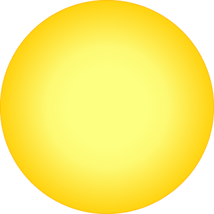
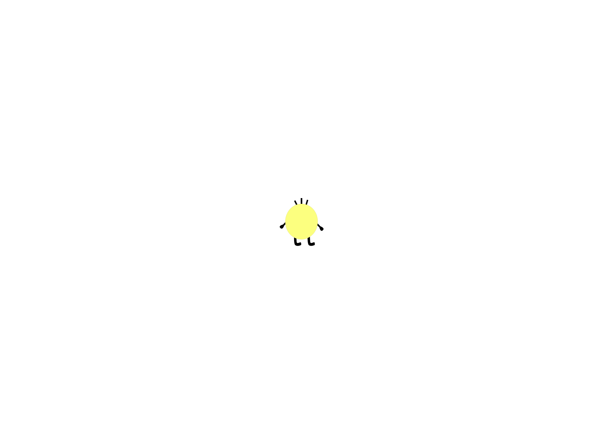
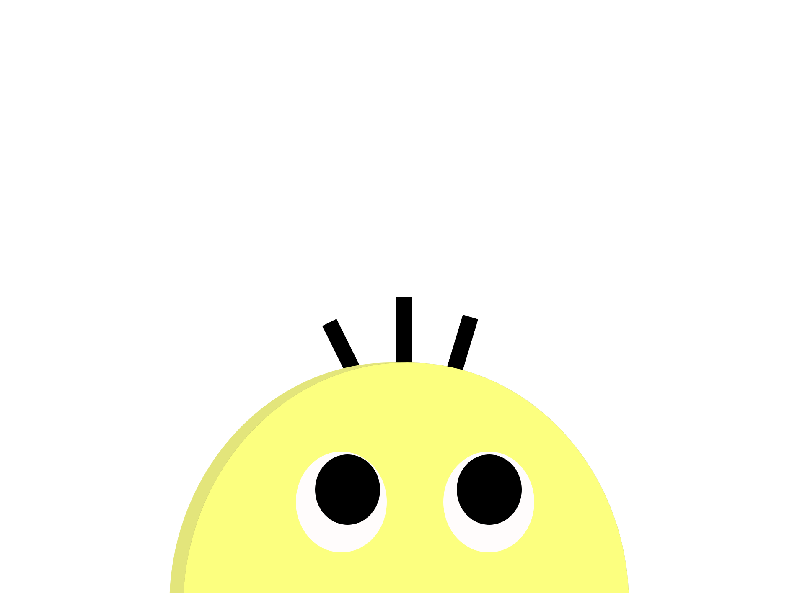
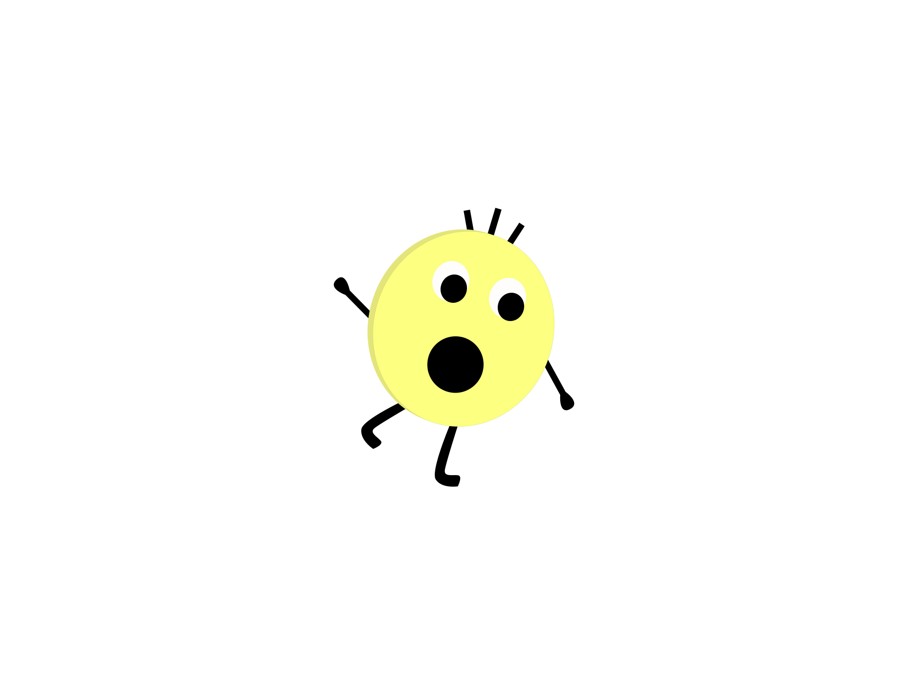
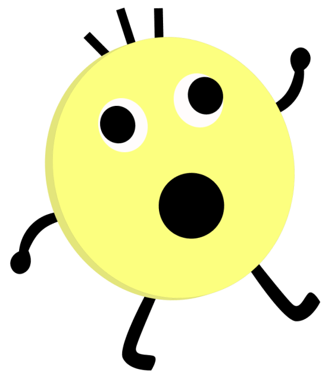
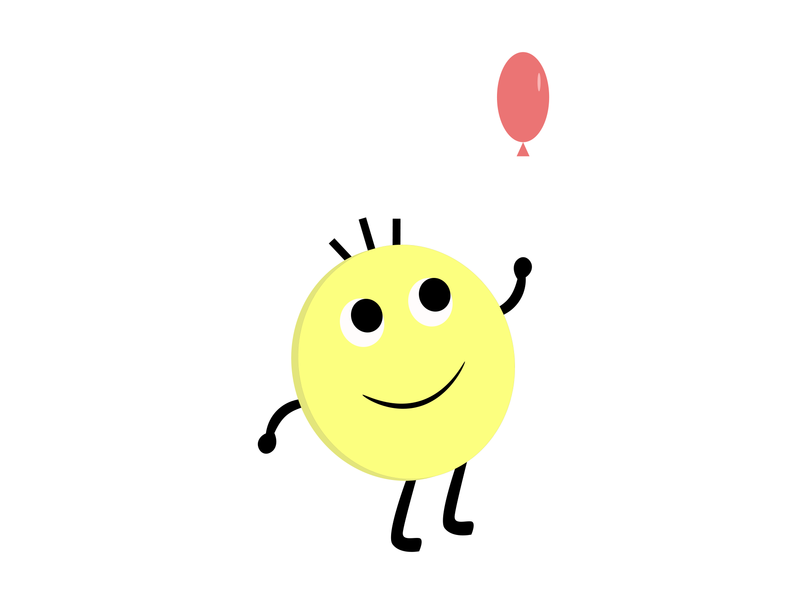
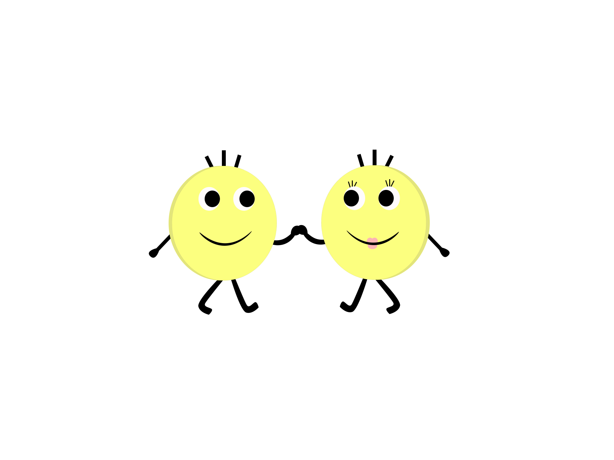
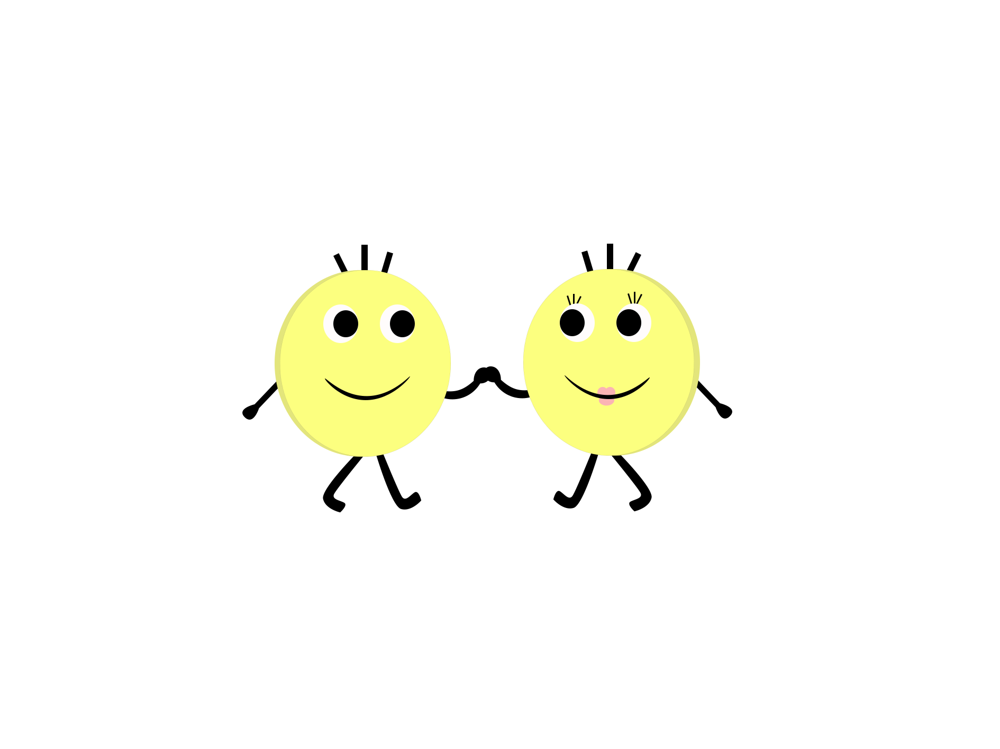

- animation du spritesheet sur la position x
- le sprite s'anime quand le body contient la class .is-scrolling
- scrollTrigger
- trigger=chap1
- pin=true, pour que le chapitre reste figer pendant l'animation
- toggleActions paramétré pour que le personnage reset quand on redescend
Smiley est une petite boule jaune qui se promène pour explorer de
nouvelle chose.

- timeline du personnage sur la position x et y
- effet parallax avec arrière-plan
- scrollTrigger
- trigger=chap2
- pin=true, pour que le chapitre reste figer pendant l'animation
- scrub=true pour que parallax s'active en même temps que le scroll
- toggleActions paramétré pour que le personnage joue sens inverse quand on sroll-up et va dans le bonsens si on le refait descendre
Il alla jusqu'au bout du monde il traversa les montagne, sous la vue du merveilleux paysage.

- animation automatique des étoiles
- animation des étoiles scaleX et scaleY
- scrollTrigger
- trigger=chap3
- pin=true, pour que le chapitre reste figer
Souvent il s'arrêta pour contempler les étoiles, Smiley adorait sa vie.

- animation: rotate
- yoyo et un repeat infini, le ease est none
- scrollTrigger
- trigger=chap4
- pin=true, pour que le chapitre reste figer
Mais un jour pendant que Smiley escaladait les montagnes, il n'a pas fais gaffe à la falaise. Il tenta de tenir l'équilibre pour ne pas tomber. :O

- motionpath
- nuage automatique et infinie
- personnage rotation autommatique infinie
- scrollTrigger
- trigger=personnage
- scrub=true, pour que le personnage suivre le rythme et le sens du scroll
- pin=false pour que l'on défile la page toute seule
Malheureusement pour Smiley il perda l'équilibre et tomba!!!

- timeline en trois étape avec la position x et y
- motionpathe
- scrollTrigger
- trigger=chap6
- pin=true, pour que le chapitre reste figer pendant l'animation
- toggleActions paramétré pour que le personnage joue sens inverse quand on sroll-up et va dans le bonsens si on le refait descendre
Soudain, un ballon le rattrape au vole et lui sauve la vie.
Mais, tout un coup un oiseau éclate le ballon et Smiley rechute.

- drawSVG
- animation du spritesheet sur la position x
- le sprite s'anime quand le body contient la class .is-scrolling
- scrollTrigger
- trigger=chap7
- scrub true pour que le dessin s'anime en même temps que le sroll, ease: power1.inOut
- pin=true, pour que le chapitre reste figer pendant l'animation
- toggleActions paramétré pour que le personnage reset quand on redescend
Juste avant de toucher le sol un autre ballon vient amortir sa chute et Smiley continue à marcher
- morphing
- scrollTrigger
- trigger=chap8
- scrub true pour que le morphing s'anime en même temps que le sroll
- pin=true, pour que le chapitre reste figer pendant l'animation
Au bout de sa marche il rencontra une jolie demoiselle, et le ballon se transforma en coeur.
 
